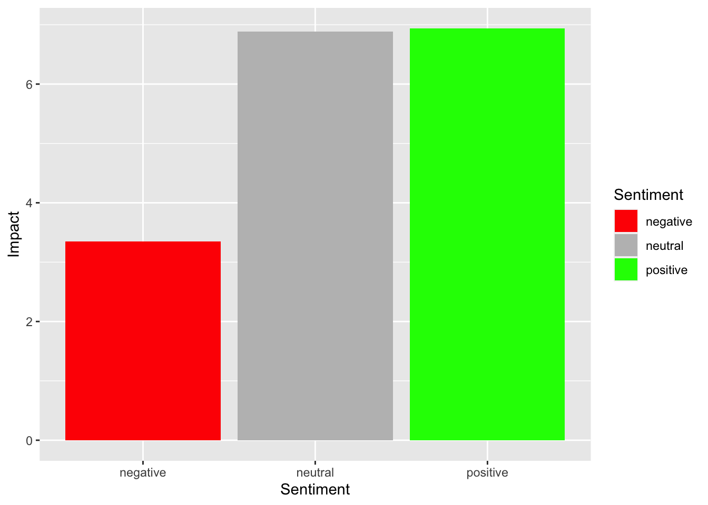
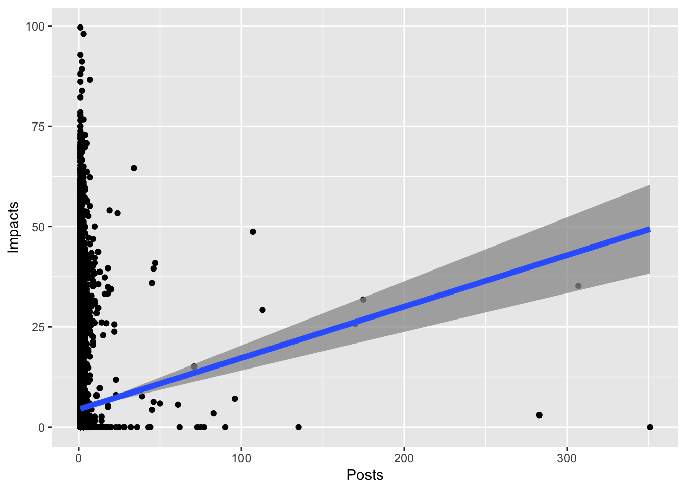

Chapter 4 Statistical Analyses of Two Variables
Analyzing a single variable can definitely help us understand the patterns of each variable in our data set; however, given its descriptive nature, it offers little insight for us to explore the relationships between different variables or to help us make informed decisions confidently. For instance, knowing the mean or median value of revenue does not allow us to understand the factors contributing to the high revenue.
Therefore, introducing a second variable or more allows us to explore the relationships between variables, based on which we can infer the results obtained from a sample to the general population and make confident decisions based on such analyses.
Now, I am going to introduce a new data set of authors of the Twitter discourses using the co-hashtags of #BlackLivesMatter and #StopAsianHate for the study of cross-racial solidarity on Twitter. It has six variables. Specifically, Gender refers to the gender of Twitter authors; Followers refers to the number of Twitter followers for each author. Using the variable of InfluencerType, authors have been categorized by follower size. Mega influencers are the highest-ranked category with more than a million followers. Macro influencers are in the tier with 100K to up to a million followers. Micro influencers are classified to have a follower base ranging from 10,000 to no more than 100K. Those who have less than 10,000 followers are classified as Nano influencers. Sentiment reflects if a tweet is positive, negative, or neutral. Post refers to the number of tweets created by an author using the co-hashtags of #BlackLivesMatter and #StopAsianHate. Finally, Impact shows you the potential impact of an author on the related Twitter discourses. It’s a normalized logarithmic scale between 0-100, with 100 indicating the greatest impact. The remaining parts of this chapter use this audience data set to demonstrate the statistical analysis of two or more variables.
library(tidyverse)
#You will need to read the social media data first
data <- read.csv("social media data.csv") #Create a dataset and name it as data4.1 Cross-tab
Sometimes, the distribution of one variable is contingent upon a second variable, and we can conduct a cross-tab analysis to find out whether one variable has a relationship with another when both of the variables are categorical variables (nominal or ordinal level). For example, I have been wondering whether gender has any relationship with the Twitter users’ degree of influence. In other words, whether men and women have an equal chance of becoming influencers at different levels. A cross-tab analysis can help us answer this question. The key to exploring the relationship between these variables is to break these variables down into attributes and use a table to display the frequency distribution of these variables, which is called a contingency table.
#The CrossTable() command from the gmodels package produces frequencies, and table, row, & column proportions with a single command.
library(gmodels)
#Run the CrossTable() command, with your two variables as inputs.
CrossTable(data$Gender, data$InfluencerType)##
##
## Cell Contents
## |-------------------------|
## | N |
## | Chi-square contribution |
## | N / Row Total |
## | N / Col Total |
## | N / Table Total |
## |-------------------------|
##
##
## Total Observations in Table: 30519
##
##
## | data$InfluencerType
## data$Gender | macro | mega | micro | nano | Row Total |
## -------------|-----------|-----------|-----------|-----------|-----------|
## female | 24 | 2 | 502 | 13719 | 14247 |
## | 1.505 | 0.048 | 3.435 | 0.078 | |
## | 0.002 | 0.000 | 0.035 | 0.963 | 0.467 |
## | 0.364 | 0.400 | 0.507 | 0.466 | |
## | 0.001 | 0.000 | 0.016 | 0.450 | |
## -------------|-----------|-----------|-----------|-----------|-----------|
## male | 42 | 3 | 488 | 15739 | 16272 |
## | 1.318 | 0.042 | 3.008 | 0.068 | |
## | 0.003 | 0.000 | 0.030 | 0.967 | 0.533 |
## | 0.636 | 0.600 | 0.493 | 0.534 | |
## | 0.001 | 0.000 | 0.016 | 0.516 | |
## -------------|-----------|-----------|-----------|-----------|-----------|
## Column Total | 66 | 5 | 990 | 29458 | 30519 |
## | 0.002 | 0.000 | 0.032 | 0.965 | |
## -------------|-----------|-----------|-----------|-----------|-----------|
##
## # change the order of the influencer type
data$InfluencerType <- factor(data$InfluencerType,
levels = c("nano", "micro", "macro", "mega"))
#redo the crosstable
CrossTable(data$Gender, data$InfluencerType)##
##
## Cell Contents
## |-------------------------|
## | N |
## | Chi-square contribution |
## | N / Row Total |
## | N / Col Total |
## | N / Table Total |
## |-------------------------|
##
##
## Total Observations in Table: 30519
##
##
## | data$InfluencerType
## data$Gender | nano | micro | macro | mega | Row Total |
## -------------|-----------|-----------|-----------|-----------|-----------|
## female | 13719 | 502 | 24 | 2 | 14247 |
## | 0.078 | 3.435 | 1.505 | 0.048 | |
## | 0.963 | 0.035 | 0.002 | 0.000 | 0.467 |
## | 0.466 | 0.507 | 0.364 | 0.400 | |
## | 0.450 | 0.016 | 0.001 | 0.000 | |
## -------------|-----------|-----------|-----------|-----------|-----------|
## male | 15739 | 488 | 42 | 3 | 16272 |
## | 0.068 | 3.008 | 1.318 | 0.042 | |
## | 0.967 | 0.030 | 0.003 | 0.000 | 0.533 |
## | 0.534 | 0.493 | 0.636 | 0.600 | |
## | 0.516 | 0.016 | 0.001 | 0.000 | |
## -------------|-----------|-----------|-----------|-----------|-----------|
## Column Total | 29458 | 990 | 66 | 5 | 30519 |
## | 0.965 | 0.032 | 0.002 | 0.000 | |
## -------------|-----------|-----------|-----------|-----------|-----------|
##
## As you can see from the contingency table, female influencers account for nearly 47% of our sample, while male influencers account for 53%. If gender had nothing to do with the level of influence a user could reach, then we would end up finding around 47% females and 53% males among every single type of influencer. Now let’s see whether that is the case.
By looking into the Nano influencer column, we found 46.6% female and 53.4% male, which seems to be pretty close to the female and male percentages we had in our whole sample. Among the Micro influencers, almost 50% of them are female and 50% of them are male, which was a bit different from the percentages within the whole sample. However, when we move on to the next level, Macro influencer, we notice that females only account for 36% at this level while males account for 64% of all the macro influencers. Finally, for the most influential, the Mega influencer group, 40% of them are females, and the rest, 60%, are all males.
To summarize the patterns of this contingency table: at the Nano and Micro level, female and male influencers have a pretty balanced distribution; however, as the level of influencer goes up, female accounts for smaller percentages. So, it appears that gender does have a relationship with the type of influencer, with females more likely to be lower-level influencers and males more likely to be higher-level influencers.
The key statistic we derived from a cross-tab analysis is called Pearson’s chi-square, which indicates whether there is a significant difference between the expected frequency of each cell and the observed frequency in that contingency table. For example, we believe that if gender did not affect the influencer type, then the expected frequency of female influencers at the Macro level should have been around 31 (66*46.6%), while in fact, we only observed 24 female influencers at the Macro level. There is a substantial difference between 31, the expected frequency if gender and influencer type had no relationship, and 24, the observed frequency. In this case, the Pearson’s chi-square we got was 9.5, which was a “sum” of all the differences between the expected frequency and observed frequency of all the cells in this contingency table, and it was significant at the 0.02 level, indicating the probability of no differences among these groups in the population is only 2%. The R code for calculating Chi-sq is below:
chisq.test(data$Gender, data$InfluencerType, correct = FALSE)## Warning in chisq.test(data$Gender, data$InfluencerType, correct
## = FALSE): Chi-squared approximation may be incorrect##
## Pearson's Chi-squared test
##
## data: data$Gender and data$InfluencerType
## X-squared = 9.5, df = 3, p-value = 0.02Generally speaking, in social science, once we see a significance level lower than 0.05, we consider it to be significant evidence that we could reject the null hypothesis, which states that no relationship exists between the independent variable and the dependent variable, and at the same time, we accept the alternative hypothesis stating that there is a relationship between the independent variable and the dependent variable. The above Pearson’s chi-square value serves as a piece of evidence for us to conclude that for Twitter authors, there is a significant relationship between gender and influencer type.
4.2 Independent Variable VS. Dependent Variable
When we are exploring the relationship between two variables, we need to understand that some variables lay their influence on other variables (Independent variables or predictors), and some variables are dependent on other variables (dependent variables or outcome variables). For example, if you think that people’s political orientation influences whether or not, or how much, they watch FOX news, then in this relationship, political orientation serves as the independent variable, and FOX news consumption serves as the dependent variable. But you may be wondering, can this relationship be reversed? If you suspect that as people watch more FOX news, their political orientation might be shifted. Then in this new relationship, you are essentially proposing that FOX news consumption is your independent variable while political orientation is the dependent variable.
4.3 Independent sample T-Test
One of the most common analyses we do in communication research is comparing group means. Let’s start with comparing means between two groups. For example, do men earn higher salaries compared to women? Do Republicans have a higher vaccination rate than Democrats? In these two examples, we are examining a relationship between an independent variable and a dependent variable, with the former being a nominal variable with two values (e.g., gender: male vs. female) and the latter being a continuous variable measured at either ratio or interval level. The two groups we are comparing correspond to the two attributes of our independent variable (men vs. women; Democrats vs. Republicans), and the value we are comparing corresponds to the value of the dependent variable (salary; vaccine uptake rate).
The analysis we use to compare two group means is called the independent sample t-test. Let’s say that we are interested in knowing whether males and females generate the same levels of impact. To answer this question, let’s compare the mean impact score of the two groups. For the case of the Twitter discourses using the co-hashtags of #BlackLivesMatter and #StopAsianHate, the average impact that females have reached was 4.87, and 4.34 for the males. We probably don’t even need any statistical tests to tell that there seems to be a difference between these two groups in terms of their impacts on the related Twitter discourses, with females generating higher impacts than the males. The key question here is, is this difference big enough for us to confidently claim that females and males have different impacts on the related Twitter discourses in the wider population? Remember, this is just one sample that we had, and our goal is to draw conclusions and make decisions within a population based on this one random sample. Therefore, we still need to look at inferential statistics to draw such conclusions.
Here is the related R code:
options(scipen = 999) # turn off scientific notation for all variables
mean_impact_gender <- data %>% #calculate the mean impact for males and females
group_by(Gender) %>%
summarise(Impact = mean(Impact))
mean_impact_gender %>%
ggplot(aes(Gender, Impact)) +
geom_col()#mean plot
library("ggpubr")
ggline(data, x = "Gender", y = "Impact",
add = c("mean_se"), # Add error bars: mean_se
order = c("male", "female"),
ylab = "Impact", xlab = "Gender")#t-test
t.test(Impact ~ Gender,
data = data)##
## Welch Two Sample t-test
##
## data: Impact by Gender
## t = 4, df = 29805, p-value = 0.00005
## alternative hypothesis: true difference in means between group female and group male is not equal to 0
## 95 percent confidence interval:
## 0.2723 0.7841
## sample estimates:
## mean in group female mean in group male
## 4.873 4.345Again, the ultimate piece of evidence we are looking for is the significance level, and in this case, it’s .00005. What does it mean? It means the chances are about 0.05% that males and females really had the same level of impact, which is the null hypothesis. Well, the chances are pretty low, aren’t they? Our null hypothesis doesn’t really hold, and we are confident enough to claim that females generate bigger impacts than males on the Twitter discourses using the co-hashtags of #BlackLivesMatter and #StopAsianHate, not just within our sample, but in the whole population of Twitter users.
4.3.1 ANOVA
Sometimes, we are interested in comparing multiple groups rather than just two groups. The idea is pretty similar. Let’s say you want to increase the impact of your tweets, and you are wondering whether tweets with different sentiments would have different levels of impact. Specifically, the sentiments of tweets can be categorized into negative, neutral, or positive. In this case, we are dealing with two variables: sentiment as the independent variable and impact as the dependent variable. And the question comes down to this: do tweets with different sentiments generate different levels of impact on the related Twitter discourses? We want to know whether the impact generated from tweets with different sentiments differs from one another. In other words, we are comparing the means of impacts among the three groups of tweets that have negative, neutral, and positive sentiments, respectively. If they do differ, then we can figure out the most effective way of tweeting and the not-so-effective tweet types in terms of generating impact for us, based on which we can publish more tweets that tend to have a higher impact in the future.
Analysis of variance (ANOVA) is the best method to answer this question. In simple words, ANOVA tests whether two or more group means are equal. Let’s say, for example, impacts generated from tweets with different sentiments are quite different, with negative tweets leading to much lower mean impacts (M = 3.346) than the other two (Ms = 6.887 & 6.94), which indicates a large variation of impacts between tweets with different sentiments. Indeed, as shown in the results of ANOVA analysis, this test yielded a significance level at .000, which indicates that it’s very unlikely to observe no differences in impacts from tweets with different sentiments in the population. Hence, this gives us strong evidence that we need to reject our null hypothesis and accept the alternative hypothesis, which is tweets with different sentiments had different impacts.
Here is the related R code:
options(scipen = 999) # turn off scientific notation for all variables
options(digits = 4) # define the digits
mean_impact_sentiment <- data %>% #calculate the mean impact for different sentiment
group_by(Sentiment) %>%
summarise(Impact = mean(Impact))
mean_impact_sentiment %>%
ggplot(aes(Sentiment, Impact, fill = Sentiment)) +
geom_col() +
scale_fill_manual(values=c("red", "gray", "green")) # manually set the column color
# Other mean plots
library("ggpubr")
ggline(data, x = "Sentiment", y = "Impact",
add = c("mean_se"), # Add error bars: mean_se
order = c("negative", "neutral", "positive"),
ylab = "Impact", xlab = "Sentiment")# Box plot
boxplot(Impact ~ Sentiment, data = data,
xlab = "Sentiment", ylab = "Impact",
frame = FALSE, col = c("red", "grey", "green"))##ANOVA
# Compute the analysis of variance
anova <- aov(Impact ~ Sentiment, data = data)
# Summary of the analysis
summary(anova)## Df Sum Sq Mean Sq F value Pr(>F)
## Sentiment 2 88248 44124 350 <0.0000000000000002
## Residuals 30516 3852570 126
##
## Sentiment ***
## Residuals
## ---
## Signif. codes: 0 '***' 0.001 '**' 0.01 '*' 0.05 '.' 0.1 ' ' 14.4 Correlation
Another type of analysis we do quite often is assessing the relationship between two continuous (interval or ratio level) variables. For example, what’s the relationship between people’s education level and their income level? In other words, do people with higher education levels have a higher income? Questions like this can be answered by assessing the Pearson’s correlation (r) between two variables. Using our data as an example again, let’s say we are interested in knowing the relationship between the number of tweets Twitter authors created containing the co-hashtags of #BlackLivesMatter and #StopAsianHate and the impact of these tweets on the related discourses on Twitter. In other words, if we created more tweets containing these two hashtags, does that translate to a higher level of impact on the related Twitter discourses? If we run the correlation between the number of posts containing these two hashtags and tweets’ impact, the key statistics we got is r = .05, p = .000.
Here is the R code for calculating correlation:
#correlations
# normalize each variable first
Impact <- (data$Impact - mean(data$Impact))/sd(data$Impact)
Post <- (data$Post - mean(data$Post))/sd(data$Post)
Correlation <- cor.test(data$Post, data$Impact,
method = "pearson")
Correlation##
## Pearson's product-moment correlation
##
## data: data$Post and data$Impact
## t = 7.9, df = 30517, p-value = 0.000000000000002
## alternative hypothesis: true correlation is not equal to 0
## 95 percent confidence interval:
## 0.03417 0.05656
## sample estimates:
## cor
## 0.04537In theory, the r value here can range from -1 to 1, and it tells us two things: (1) the direction of the relationship; and (2) the strength of the relationship. A positive r value indicates a positive relationship, during which two variables’ values move in the same direction, while a negative value indicates a negative relationship, in which the values of two variables move in the opposite directions. If you suspect that when people have a higher degree, they have a higher income level as well, you are hypothesizing a positive relationship, with the values of the two variables increasing at the same time. However, if you suspect that the longer time we spend playing video games, the lower GPA we will have, that’s a negative relationship in which the two variables move in the opposite directions, with one variable’s value decreasing as the other increases. Now that we know the direction, what about the strength? An r value closer to 1 or -1 indicates a stronger relationship; while an r value closer to 0 indicates a weaker relationship or no relationship at all, in which one variable’s value does not move in any clear pattern as the other variable’s value changes.
In fact, in social science, it’s quite unlikely that we observe a perfect correlation between two different variables. Why? Because most of the concepts we study in social science are pretty complicated and they are related to and influenced by many factors. For example, study time will no doubt affect our GPA, but it is not the only factor that does. Our learning methods, intelligence, and class participation, among many other factors, jointly shape our GPA. Therefore, how our GPA changes will not solely be dependent upon our study time.
Let’s return to the case of analyzing the relationship between the number of posts that contain the two hashtags (#BlackLivesMatter and #StopAsianHate) and the impact of tweets. Do you think these two variables would be correlated? Probably. If you tweet more about popular social issues, it is likely that your tweets will generate a higher impact for those social issues. The Pearson’s r we got between these two variables is .05, which is a positive value and hence indicates a positive relationship: as the number of posts containing these two hashtags increases, so does the impact of tweets for the related Twitter conversations. Then what about the strength of the relationship?
In social science, a correlation coefficient of 0.05 is considered a weak relationship between two variables, meaning that when one variable increases, the other variable also tends to increase, but in a rather unreliable manner. In other words, when Twitter authors post more tweets using the co-hashtags in their tweets, it is likely that their tweets will generate higher impacts on the related Twitter discourses, and it is also likely that the impact level stays the same or will even be lower. The probability value, or what we call the p value, is below 0.05, which indicates that we can be confident enough to infer this relationship to a larger population. In other words, going beyond this one sample that we have, we can be confident enough that in the whole population of tweets, there is a positive correlation between a Twitter user’s number of posts containing these two hashtags and the impact of their tweets on the related Twitter discourses.
4.5 Regression
One of the most important goals we want to achieve in doing research is to predict. Simple linear regression is a technique that helps us predict the value of our dependent variable given the value of our independent variable. When we use this technique, statistical software will test whether each predictor plays a significant role in helping us predict the dependent variable by conducting a t-test and also calculate a regression equation for us in the form of Y = a + b*X, which represents the linear relationship between our independent variable and dependent variable and also allows us to estimate the value of Y given any value of X.
Let’s still use the example of Twitter user’s number of posts containing the two hashtags and the impact of their tweets. If we want to use the number of posts to predict impact, we just need to run a simple linear regression that regresses impact on the number of posts.
#Impact = b0 + b1*Post
model1 <- lm(data$Impact ~ data$Post) #regress the predictor and the outcome variables
summary(model1) # look into coefficients of the regression analysis & r square##
## Call:
## lm(formula = data$Impact ~ data$Post)
##
## Residuals:
## Min 1Q Median 3Q Max
## -49.37 -4.55 -4.55 -4.55 95.05
##
## Coefficients:
## Estimate Std. Error t value Pr(>|t|)
## (Intercept) 4.4264 0.0682 64.88 < 0.0000000000000002
## data$Post 0.1281 0.0161 7.93 0.0000000000000022
##
## (Intercept) ***
## data$Post ***
## ---
## Signif. codes: 0 '***' 0.001 '**' 0.01 '*' 0.05 '.' 0.1 ' ' 1
##
## Residual standard error: 11.4 on 30517 degrees of freedom
## Multiple R-squared: 0.00206, Adjusted R-squared: 0.00203
## F-statistic: 63 on 1 and 30517 DF, p-value: 0.00000000000000219# visualization
Post <- data$Post
Impact <- data$Impact
ggplot(data, aes(x = Post, y = Impact)) +
#create scatterplots
geom_point() +
#linear regression line
geom_smooth(method = 'lm', size = 2, alpha = 0.75) +
xlab("Posts") +
ylab("Impacts")## `geom_smooth()` using formula = 'y ~ x'
The t-test returned us a t value of 7.93, and the p value associated with it is less than .0001, which indicates that the number of posts is indeed a significant predictor of impact. The equation we got is Y = 4.59 + 0.52*X, with X representing our independent variable, number of posts, and Y representing our dependent variable, impact. Now all we need to do is plug in the value of X and then we will get an estimation of Y.
Let’s say I have ten posts that contain the two hashtags, then the estimated impact on the related Twitter discourse is: Impact = 4.59 + 0.52*10= 9.79.
If another user has 20 posts like this, then he or she would most likely create a bigger impact = 4.59 + 0.52*20= 14.99. In this way, once we’ve known a Twitter user’s number of posts containing these two hashtags, we could have a pretty good prediction of the impact his or her tweets might generate.
In a regression analysis, the independent variable can not only be a continuous variable, it can also be a nominal or ordinal level variable. For example, we are wondering to what extent the gender of the Twitter influencers affects their impacts, and we can regress impact on gender to find out. Gender is a nominal variable with two attributes: Twitter influencers are either male (coded as 0) or female (coded as 1). The regression equation we got was **Impact = 4.34 +0.52*Gender**.
#create factors
gender <- factor(data$Gender_D, c(0,1), labels=c('Male', 'Female'))
contrasts(gender)## Female
## Male 0
## Female 1#Impact = b0 + b1*gender
model2 <- lm(data$Impact ~gender)
summary(model2)##
## Call:
## lm(formula = data$Impact ~ gender)
##
## Residuals:
## Min 1Q Median 3Q Max
## -4.87 -4.87 -4.34 -4.34 94.73
##
## Coefficients:
## Estimate Std. Error t value Pr(>|t|)
## (Intercept) 4.3448 0.0891 48.78 < 0.0000000000000002
## genderFemale 0.5282 0.1303 4.05 0.000051
##
## (Intercept) ***
## genderFemale ***
## ---
## Signif. codes: 0 '***' 0.001 '**' 0.01 '*' 0.05 '.' 0.1 ' ' 1
##
## Residual standard error: 11.4 on 30517 degrees of freedom
## Multiple R-squared: 0.000538, Adjusted R-squared: 0.000505
## F-statistic: 16.4 on 1 and 30517 DF, p-value: 0.0000509To predict the impact of each gender, we can simply plug in thevalues of gender. When influencers are male, their corresponding impact scorewould be: 4.34 + 0.520 = 4.34. Female influencers’ impact score is: 4.34 + 0.521= 4.86. Based on the equation, we could estimate the Twitter users’ impact score by just knowing their gender. We also can learn from this linear regression model that females had more impact on the Twitter discourses using the co-hashtags of#BlackLivesMatter and #StopAsianHate.
Another important statistic to look at in a regression test is R square, which indicates the portion of variance in the dependent variable that has been explained by the predictor(s). In this model, the R square is .0005, meaning that 0.05% of variance in impact could be explained by gender. As mentioned earlier, in social science, usually our dependent variables are jointly influenced by multiple factors, some of which we can successfully identify and some not. When the regression test results indicate that 0.05% of the variance in impact has been explained by gender, we know that the rest of the 99.5% of variance in impact could be explained by many other factors jointly.